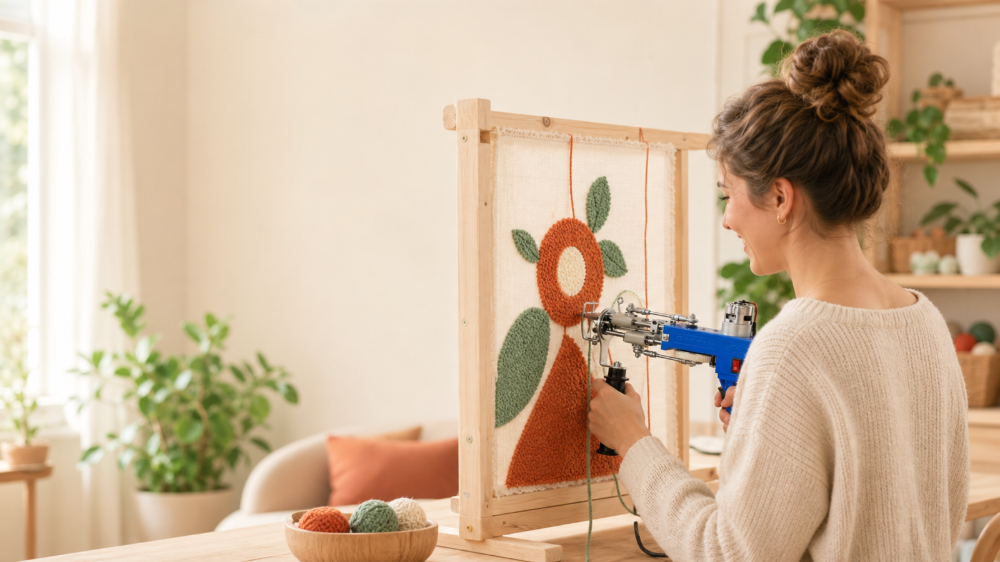
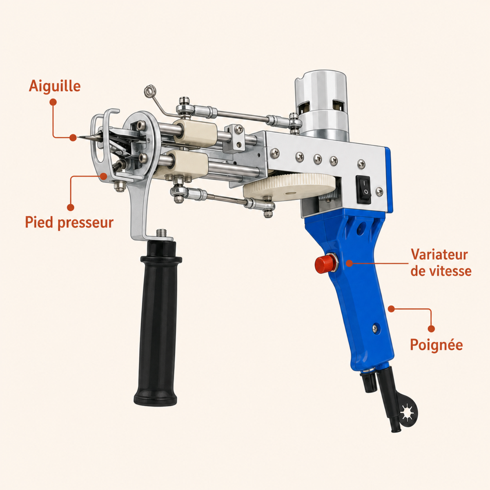
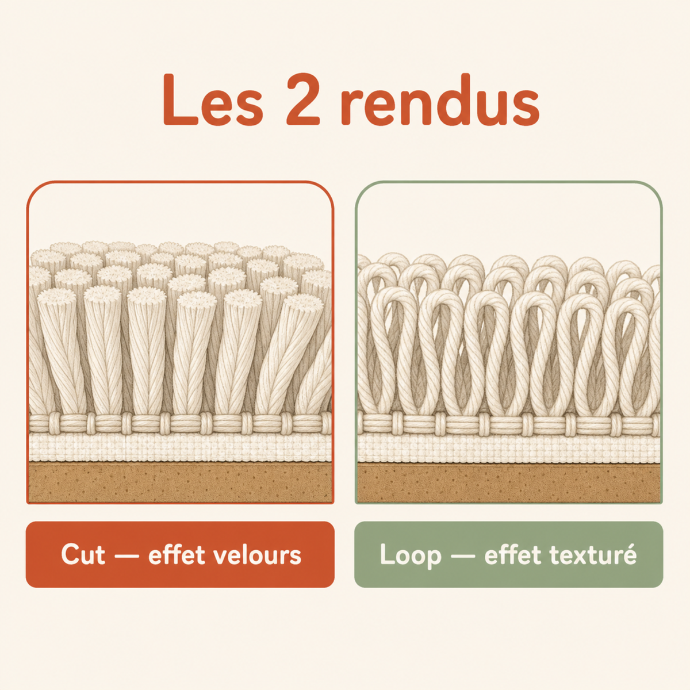

Le guide de démarrage tufting de Tuftéo — de la toile tendue au tapis fini, chaque geste expliqué en français, sans jargon.
on commence ensemble →

tout ce qu'il te faut, dans l'ordre
Tout est dans ton kit Tuftéo, sauf le cadre (voir étape 1).
Prévois aussi un marqueur et une brosse — rien d'obligatoire à racheter tout de suite.
Si tu ne retiens qu'une chose de ce guide, c'est celle-ci : une toile mal tendue = une pièce ratée. Ton aiguille a besoin d'une surface ferme, tendue comme une peau de tambour, pour percer proprement et déposer un poil régulier.
Fixe ta toile sur un cadre en bois rigide à l'aide des bandes de préhension (les picots agrippent le tissu) ou d'agrafes solides. Le cadre doit être plus grand que ton motif : garde au moins 10 cm de marge tout autour pour pouvoir tendre et tenir la pièce.
Tire la toile depuis le centre vers les bords, puis fixe en croix (haut, bas, gauche, droite) avant de compléter les angles. Quand tu tapotes dessus, ça doit résonner. Pendant que tu tuftes, la toile se détend un peu : retends-la régulièrement.
Une toile qui « gondole » ou qui s'enfonce quand l'aiguille passe, c'est le signe n°1 d'une tension insuffisante. Tu obtiendras des boucles inégales et des accrocs. Retends avant de continuer, jamais après.
Choisis un motif simple pour ta première pièce : une forme pleine, deux ou trois couleurs franches. Les dégradés et les petits détails viendront plus tard.
Dessine ton motif au marqueur directement sur la toile, du côté où tu vas passer le gun. Pense-le en miroir si tu as du texte ou une forme asymétrique. Trace des traits épais et bien visibles : tu les suivras à travers le bruit de la machine.
Retourne ta toile et vérifie le recto toutes les quelques minutes. C'est le seul moyen de voir le vrai rendu et de repérer un trou ou une couleur qui déborde pendant que c'est encore rattrapable.
C'est le moment qui intimide — et celui qui se règle en une fois. Une fois le fil en place et le bon geste trouvé, tu ne réfléchis plus.

Passe le fil par l'arrière du gun, guide-le avec l'enfile-aiguille jusqu'à la pointe, et laisse dépasser environ 1 cm. Un fil mal engagé = un point sauté : prends ton temps sur les premiers.
Ajuste la hauteur de poil et la vitesse selon ta machine. Démarre lentement : tu prendras de la vitesse quand le geste sera fluide.
Tiens le gun perpendiculaire à la toile, à plat contre le tissu. Avance en poussant régulièrement, sans forcer : c'est la machine qui travaille. Ne repasse pas deux fois au même endroit.
Trop vite, l'aiguille bourre et saute des points ; en biais, les poils partent de travers. Lent et droit bat rapide et penché à tous les coups au début.
Ton gun 2-en-1 fait deux rendus. Comprends-les, et tu choisis l'effet de chaque zone.

Les poils sont coupés : surface dense, douce, moderne. Idéal pour les grandes zones et un rendu net.
Les boucles restent fermées : rendu plus « fait main », un relief qui accroche la lumière. Parfait pour les détails.
tout le monde les fait — toi, tu es prévenu
Toile pas assez tendue. La cause n°1 des ratés. Retends dès que ça mollit.
Aller trop vite. L'aiguille saute des points. Ralentis, la vitesse vient seule.
Lignes trop espacées. Le tapis devient transparent et se déchire. Colle tes passes.
Oublier de vérifier le recto. On corrige une erreur pendant, jamais après l'encollage.
Encoller sans dépoussiérer. La colle n'accroche pas sur les peluches. Brosse d'abord.
Sans colle, tout ce que tu viens de tufter peut s'arracher. Cette étape verrouille chaque boucle. Ne la saute jamais.
Une couche fine et homogène tient mieux qu'une grosse couche baveuse qui traverse vers l'avant. Si tu vois la colle ressortir entre les poils du recto, tu en as trop mis.
Une fois sèche, ta pièce est solide : tu peux la décoller du cadre sans crainte.
Décolle la pièce du cadre. Découpe autour de ton motif en laissant 2 à 3 cm de marge. Deux façons de finir :
Avec ta tondeuse de finition, égalise la surface par passes légères pour un rendu régulier. Tu peux ensuite sculpter du relief : raccourcis certaines zones pour créer des niveaux, détacher un motif, adoucir un contour. Avance doucement — on peut toujours couper plus, jamais recoller.
Le guide de tonte maintient une hauteur constante : commence avec, tu improviseras à main levée quand l'œil sera fait.
Tu as les bases. La suite — motifs, dégradés, reliefs avancés, dépannage — t'attend dans la Tuftéo Academy, nos guides en ligne gratuits, accessibles à vie.
Un doute, une question, un point de blocage ? Écris-nous, on répond en français : contact@tufteo.com
Rejoins l'Academy → tufteo.com/pages/apprendreBon tufting — et fais-toi plaisir !